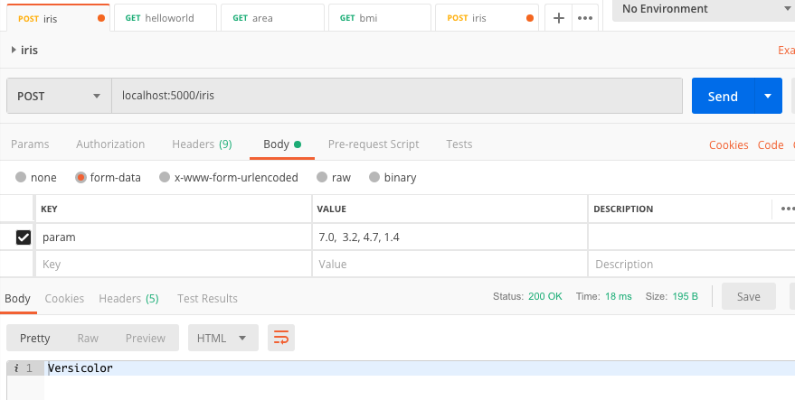

Machine learning as a service
Creating an API endpoint for your model
Preparing API endpoints in Python with Flask
In this post, we’ll create a minimal API endpoint that allows users to make request to calculate the area of a rectangle. The following code sets up an API endpoint locally. We’ll import Flask, a lightweight web application framework and CORS (cross-origin resource sharing) which allows for various HTTP requests.
We have two endpoints, one basic “hello world” and the other calculate the area (i.e., width x height).
This is saved in App.py. The command to run this file is $ python3 App.py. The last line ensures the API is running locally on localhost:5000.
from flask import Flask, request
from flask_cors import CORS, cross_origin
import joblib
import numpy as np
app = Flask(__name__)
CORS(app)
@app.route('/')
def helloworld():
return 'Helloworld'
# Example request: http://localhost:5000/area?w=50&h=3
@app.route('/area', methods=['GET'])
@cross_origin()
def area():
w = float(request.values['w'])
h = float(request.values['h'])
return str(w * h)
if __name__ == '__main__':
app.run(host='0.0.0.0', port=5000, debug=True)
You can just run localhost:5000 and get Helloworld or make a request to get the area, for example: http://localhost:5000/area?w=20&h=33 (this yeilds 660)
Training a Logistic Regression classification model
After setting up some API endpoints, it’s time to create a basic machine learning model. We’ll create a logistic regression model to classify flowers from the Iris dataset. This will be created in one jupyter notebook.
We’ll load all required libraries.
from sklearn.datasets import load_iris
from sklearn.linear_model import LogisticRegression
from sklearn.model_selection import train_test_split
from sklearn.metrics import accuracy_score
import joblib
import numpy as np
import pandas as pd
Then, we’ll load the Iris dataset that comes with scikit learn, sklearn.
iris = load_iris()
# assign two variables at once
X, y = iris['data'], iris['target']
We’ll reshape the data using numpy, then split the data into training and validation sets.
# reshape data for logistic regression
dataset = np.hstack((X, y.reshape(-1,1)))
np.random.shuffle(dataset)
# split data into training, validation sets
X_train, X_test, y_train, y_test = train_test_split(dataset[:, :4],
dataset[:, 4],
test_size=0.2)
We’ll then fit a logistic regression model by fitting the training set to the validation set.
model = LogisticRegression()
model.fit(X_train, y_train)
Then, we’ll use the model to predict on the validation data (note: in a real project a distinction is made between validation and testing sets, but we’ll blur that distinction for this demo). You can also test the model to make a prediction on a single observation.
It’s also a good idea to get the accuracy_score(), although it may not be ideal for classification models.
# make a prediction
y_pred = model.predict(X_test)
# get accuracy score
accuracy_score(y_test, y_pred)
# make prediction on single Iris obervation
model.predict([[5.1, 3.5, 1.4, 0.2]])
Finally, we need to use joblib to save an iris.model to our directory, this will be used to connect to the API.
joblib.dump(model, 'iris.model')
Creating an API endpoint for the Logistic Regression model
Back in the App.py file, we’ll add this section to create an endpoint, the predict_species() function that loads the iris.model, then sends a Post request of the four parameter values from iris['data']. The predict_species() function will then return one of three flower species.
@app.route('/iris', methods=['POST'])
@cross_origin()
def predict_species():
model = joblib.load('iris.model') #needs to be the correct path
req = request.values['param']
inputs = np.array(req.split(','), dtype=np.float32).reshape(1,-1)
predict_target = model.predict(inputs)
if predict_target == 0:
return 'Setosa'
elif predict_target == 1:
return 'Versicolor'
else:
return 'Virginica'
Testing the API endpoint on Postman
Finally, we’ll use Postman, a platform for API development. We will post four parameters (i.e., sepal length, sepal width, petal length and petal width) to the API endpoint and expect to receive a name back, either Setosa, Versicolor or Virginica. In Postman, we’ll create a new collection and a new request:

The next step from here is to go beyond localhost and deploy the model. We’ll explore that in another post.
Paul Apivat
data in web3
My interests include data science, machine learning and R/Python programming.